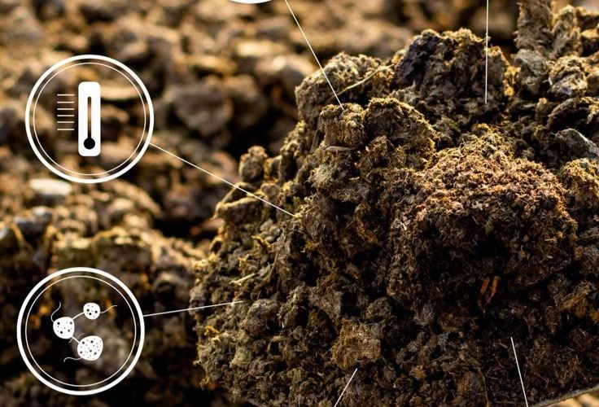

Our Work & Projects
We are actively involved in multiple initiatives aimed at increasing green cover and promoting environmental sustainability. Explore our key projects below.
Afforestation and Green Cover Initiative
Recognising that trees are the lifeline of our planet, this initiative is our dedicated response to the challenges of deforestation and climate change. We focus on transforming barren and degraded lands by planting native tree species that are crucial for restoring ecological balance. Our approach is deeply rooted in community participation, involving local villagers, students, and volunteers in the entire process—from planting the saplings to nurturing their growth. This project not only creates vital green lungs for our communities but also helps in conserving soil, improving groundwater levels, and creating sustainable habitats for biodiversity to flourish.
Community Sanitation and Hygiene Drives
We believe a clean environment is the foundation of a healthy society. Our Community Sanitation and Hygiene Drives are hands-on initiatives to create a cleaner and healthier living space for everyone. üè° We actively organize and mobilize residents, youth, and volunteers to participate in neighborhood clean-up campaigns, clearing public spaces of waste and promoting proper garbage disposal. Beyond just cleaning, we conduct awareness programs on the importance of personal hygiene, handwashing, and waste segregation. By empowering communities with knowledge and fostering a sense of collective responsibility, we aim to bring about a lasting behavioral change for a more hygienic and sustainable future. ✨
Rainwater Harvesting and Water Conservation
In the face of growing water scarcity, our mission is to make every drop count. This initiative focuses on implementing practical and sustainable solutions to conserve water and secure the future of our communities. üíß We work directly with villagers and farmers to construct and revitalise rainwater harvesting structures, from simple rooftop collection systems to community-level check dams and percolation pits. By capturing precious monsoon runoff, we effectively replenish groundwater aquifers, raise the water table, and ensure water availability for both drinking and agriculture long after the rains have passed. This project directly empowers communities, enhances agricultural productivity, and builds resilience against drought. üåç
Bridging the Digital Divide in Schools
In today's digital world, we believe no child should be left behind. This initiative directly tackles the educational inequality faced by students in under-resourced government schools. üíª We establish and manage fully-equipped computer labs, providing students with hands-on access to modern technology and the internet. Beyond just providing hardware, our program focuses on fostering digital literacy through structured training for both students and teachers. This empowers them with essential 21st-century skills, unlocking a world of information and opportunity for a brighter, tech-driven future.
Sustainable Agriculture and Water Management
To secure farmer livelihoods and ensure food security, this initiative champions a shift towards sustainable agriculture. We address the critical link between water and farming by implementing efficient solutions like drip irrigation, building farm ponds, and promoting watershed management. üå± Simultaneously, we train farmers in eco-friendly practices such as organic farming, composting, and soil conservation. This integrated approach conserves precious water, enhances crop yields, and reduces reliance on chemical inputs, building a resilient and profitable agricultural future for our communities.
Solid Waste Management Programs
We believe in transforming waste from a community problem into a valuable resource. Our programs establish sustainable, community-driven systems for solid waste management. ♻️ We focus on promoting waste segregation at the source, empowering households to easily separate wet, dry, and hazardous waste. Through localized composting units, organic waste is converted into nutrient-rich manure for gardens and farms, while dry waste is channeled for effective recycling. This circular approach dramatically reduces landfill burden, creates cleaner, healthier living spaces, and fosters a culture of environmental responsibility.
The Green Village Transformation Project
This project is our holistic vision for creating self-reliant, eco-friendly rural communities. It moves beyond single issues to implement a comprehensive model for sustainable living. üåø Our intervention integrates key solutions simultaneously: installing solar power for clean energy, establishing rainwater harvesting for water security, implementing community-wide waste management, and promoting organic farming. By weaving together these efforts, we aim to create a model village that thrives in harmony with nature, ensuring an improved quality of life and a resilient future.
Women's Empowerment and Livelihood
We believe that when women are empowered, entire communities prosper. This initiative is dedicated to unlocking the immense potential of women through economic independence and social leadership. üë©‚Äçüë©‚Äçüëß‚Äçüëß We provide crucial vocational training in market-relevant skills such as tailoring, handicrafts, and food processing, enabling them to launch sustainable micro-enterprises from their homes and villages. A cornerstone of our approach is the formation of Self-Help Groups (SHGs), which create a powerful ecosystem for financial literacy, savings, and collective decision-making. Through this program, women are not just earning an income; they are becoming confident leaders and powerful agents of change.

Our Gaushala
In reverence for the sacred place cows hold in our culture, our Gaushala stands as a sanctuary of peace and compassion. üêÑ This initiative provides a loving forever home to aged, abandoned, and infirm cows, rescuing them from a life of hardship and neglect. Within our sanctuary, these gentle animals receive everything they need to live comfortably: clean and secure shelter, nutritious fodder, fresh water, and dedicated veterinary care. Our Gaushala is more than a shelter; it is our commitment to ensuring these beings live out their remaining years with the dignity, peace, and respect they truly deserve, free from suffering.
Promoting Eco-Friendly Transport
To combat rising air pollution and create healthier communities, our Eco-Friendly Transport initiative champions a shift towards sustainable mobility. üö¥ Our primary focus is on re-introducing the culture of cycling and walking as practical, everyday modes of transport. Through community cycle rallies, awareness campaigns in schools, and public advocacy, we highlight the immense benefits of active transport. Choosing a bicycle or walking for short distances is a simple yet powerful action that improves personal health, reduces traffic congestion, and significantly lowers our collective carbon footprint. This project is our commitment to building cleaner, greener, and more breathable spaces for everyone.
Herbal Garden Initiative
Reconnecting our communities with the profound healing power of nature is the soul of our Herbal Garden Initiative. üåø This project focuses on establishing and nurturing gardens rich with indigenous medicinal and aromatic plants like Tulsi, Neem, Aloe Vera, and Ashwagandha. Cultivated in community spaces and school grounds, these gardens serve multiple vital purposes. They act as living pharmacies, providing accessible, natural remedies for everyday ailments and promoting a culture of wellness. Furthermore, this initiative is a crucial effort to preserve our rich botanical heritage, educate younger generations on traditional wisdom, and conserve local biodiversity.